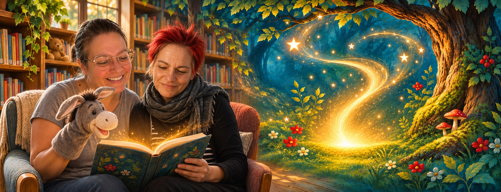

Pré-escolar
O Esquilo Travesso
Um conto sobre amizade, família adoptiva e o que significa ajudar alguém. No fim, conversamos sobre as escolhas do esquilo.

Projecto cultural e editorial
Levamos contos a escolas e bibliotecas. Damos voz às personagens e convidamos as crianças a imaginar o que acontece a seguir.
O nosso primeiro livro · Já à venda
E se um livro se recusasse a acabar?
A Princesa Violeta, o Cavaleiro Ambrósio Ferrugem, o Doutor Baltazar e a Bruxa Bonifácia Maria estão quase a chegar ao fim da aventura. Só que o Livro tem outros planos. Sempre que a história parece terminar, inventa um novo capítulo e arranja mais uma confusão.
Na última página, é a vez do leitor imaginar o seu próprio final.
Para escolas e bibliotecas
Partimos de um guião, damos voz às personagens e fazemos pausas para ouvir as crianças. Quando uma ideia do grupo abre caminho, improvisamos a partir dela. No fim, uma actividade breve dá espaço às ideias de cada criança.
Trabalhamos com grupos pequenos de idades próximas, idealmente sentados em semicírculo. Combinamos a história, a duração e a actividade com a equipa que nos recebe.
Pré-escolar
Um conto sobre amizade, família adoptiva e o que significa ajudar alguém. No fim, conversamos sobre as escolhas do esquilo.
1.º e 2.º anos
Uma história para falar sobre o medo. As crianças podem partilhar o que as assusta e imaginar maneiras de lidar com isso.
3.º e 4.º anos
Uma aventura cheia de reviravoltas e situações disparatadas. A proposta final é inventar um desfecho para o Livro… ou deixá-lo em aberto.
Conhecer o livroA equipa
Somos três criadoras que juntam livros ilustrados, interpretação e animação para levar as histórias ao encontro das crianças.
Contactos
Para conversarmos sobre uma sessão, indique a escola ou biblioteca, a localidade, as idades das crianças e o número aproximado de participantes.
Escrever à equipa